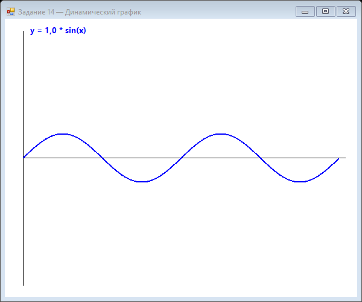

Урок 5.3: Динамические данные
Обновление графика в реальном времени
private List<float> data = new List<float>();
private Timer updateTimer;
public Form1()
{
InitializeComponent();
this.DoubleBuffered = true;
updateTimer = new Timer();
updateTimer.Interval = 100; // Обновление каждые 100мс
updateTimer.Tick += UpdateTimer_Tick;
updateTimer.Start();
}
private void UpdateTimer_Tick(object sender, EventArgs e)
{
// Добавление нового значения
float newValue = GetNewDataValue(); // Ваша функция получения данных
data.Add(newValue);
this.Invalidate();
}Скользящее окно данных
private const int MAX_POINTS = 100;
private Queue<float> dataQueue = new Queue<float>();
private void AddDataPoint(float value)
{
dataQueue.Enqueue(value);
if (dataQueue.Count > MAX_POINTS)
{
dataQueue.Dequeue(); // Удалить старую точку
}
this.Invalidate();
}Автомасштабирование
private void DrawGraph(Graphics g)
{
if (data.Count == 0) return;
// Автоматическое определение минимума и максимума
float minValue = data.Min();
float maxValue = data.Max();
// Добавление отступов
float range = maxValue - minValue;
minValue -= range * 0.1f;
maxValue += range * 0.1f;
// Масштабирование
float scaleY = this.Height / (maxValue - minValue);
// Рисование графика с учетом масштаба
// ...
}Практика: монитор системы
Создайте монитор, который отображает:
- Использование CPU в реальном времени
- Использование памяти
- Скользящее окно последних 60 секунд
- Автомасштабирование
📝 Пример задания — динамический график с ползунком (Task14)
TrackBar управляет амплитудой. При каждом изменении значения ползунка панель перерисовывается с новым масштабом синусоиды:
using System;
using System.Collections.Generic;
using System.Drawing;
using System.Windows.Forms;
namespace CSharpGraphicsApp
{
public class Task14_DynamicGraph : Form
{
private double amplitude = 1.0;
private TrackBar trackBar;
private Label lblAmp;
private Panel graphPanel;
public Task14_DynamicGraph()
{
Text = "Задание 14 — Динамический график";
Size = new Size(600, 500);
BackColor = Color.White;
var panel = new Panel { Dock = DockStyle.Top, Height = 60 };
trackBar = new TrackBar
{
Location = new Point(20, 10), Width = 400,
Minimum = 1, Maximum = 30, Value = 10
};
trackBar.ValueChanged += (s, e) =>
{
amplitude = trackBar.Value / 10.0;
lblAmp.Text = "Amp: " + amplitude.ToString("F1");
graphPanel.Invalidate();
};
lblAmp = new Label
{
Location = new Point(430, 15), Width = 100, Text = "Amp: 1.0"
};
panel.Controls.Add(
new Label { Text = "Амплитуда:", Location = new Point(20, 0), AutoSize = true });
panel.Controls.Add(trackBar);
panel.Controls.Add(lblAmp);
Controls.Add(panel);
graphPanel = new Panel { Dock = DockStyle.Fill, BackColor = Color.White };
graphPanel.Paint += GraphPanel_Paint;
Controls.Add(graphPanel);
}
private void GraphPanel_Paint(object sender, PaintEventArgs e)
{
Graphics g = e.Graphics;
int width = graphPanel.ClientSize.Width;
int height = graphPanel.ClientSize.Height;
int originY = height / 2;
int originX = 30;
g.DrawLine(Pens.Black, originX, originY, width - 20, originY);
g.DrawLine(Pens.Black, originX, 20, originX, height - 20);
var pts = new List<PointF>();
for (float x = -(float)Math.PI * 2; x <= Math.PI * 2; x += 0.05f)
{
float y = (float)(amplitude * Math.Sin(x));
float sx = originX + (x + 2 * (float)Math.PI) /
(4 * (float)Math.PI) * (width - originX - 30);
float sy = originY - y * 40;
pts.Add(new PointF(sx, sy));
}
using (Pen pen = new Pen(Color.Blue, 2))
g.DrawLines(pen, pts.ToArray());
g.DrawString("y = " + amplitude.ToString("F1") + " * sin(x)",
new Font("Segoe UI", 10, FontStyle.Bold), Brushes.Blue, 40, 10);
}
}
}Практическое задание
Задание: Динамические данные
- Создайте график, который отображает случайные значения в реальном времени
- Используйте скользящее окно из 100 точек
- Реализуйте автомасштабирование
Задание по аналогии: Динамический график с управлением (Task14)
По аналогии с Task14_DynamicGraph создайте форму с интерактивным графиком.
- Добавьте на форму
Panelвверху (высота 60) сTrackBarиLabel. - В
TrackBar.ValueChanged: пересчитайте значение амплитуды изtrackBar.Valueи вызовитеgraphPanel.Invalidate(). - Создайте
Panel graphPanel(Dock = Fill) с обработчиком Paint для рисования. - В обработчике Paint нарисуйте оси и список точек для функции
amplitude * sin(x). - Выведите формулу с текущей амплитудой через
g.DrawString.
Пример результата выполнения задания:

Скриншот программы (Task14)
Пример результата выполнения задания:
Скриншот программы (Task14)
💡 Совет: Значение
TrackBar.Value — целое, поэтому для дробных шагов делите на 10: amplitude = value / 10.0.
Проверка знаний
Ответьте на вопросы, чтобы проверить, насколько хорошо вы усвоили материал:
1. Усвоили ли вы основные концепции урока?
2. Готовы ли вы применить изученное на практике?
3. Что такое скользящее окно данных?